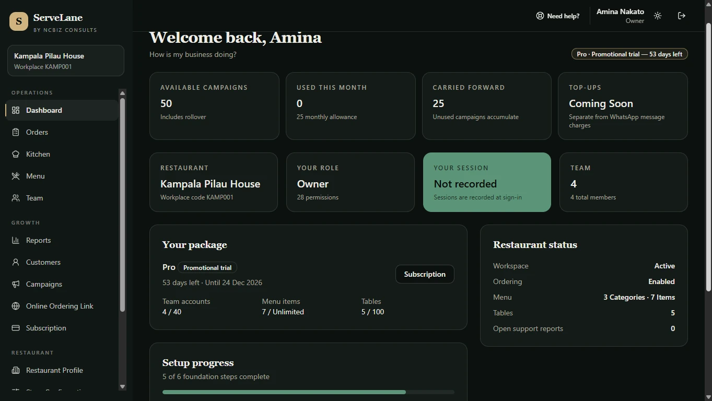
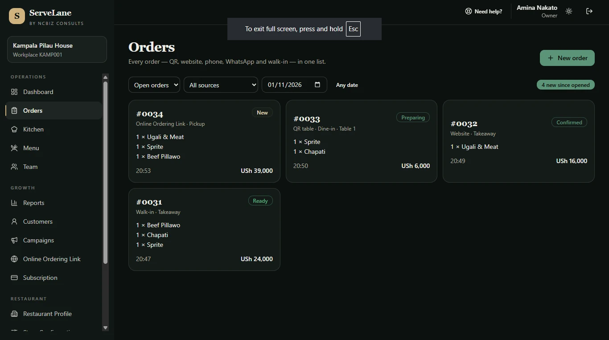
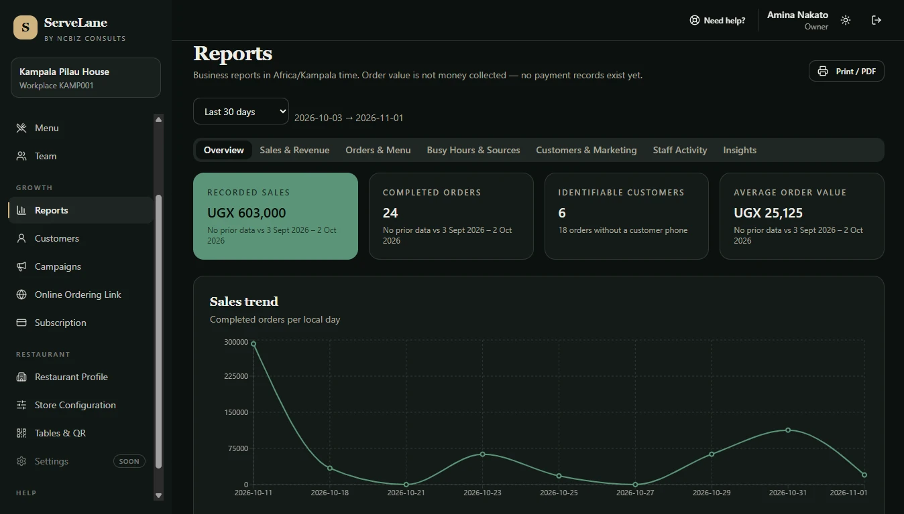
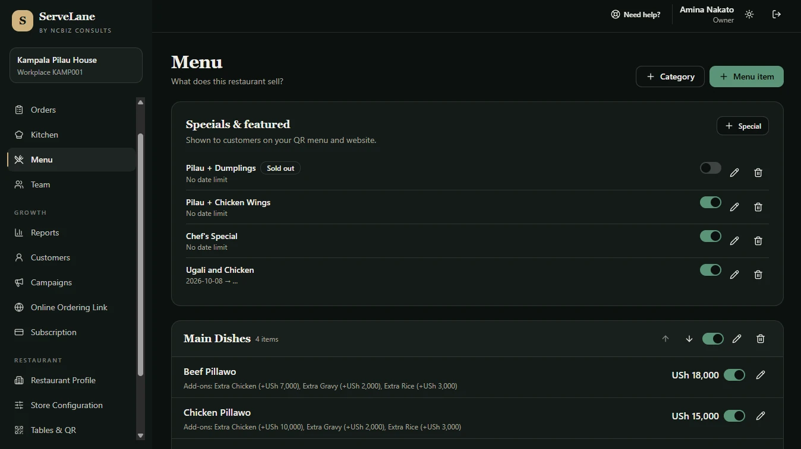
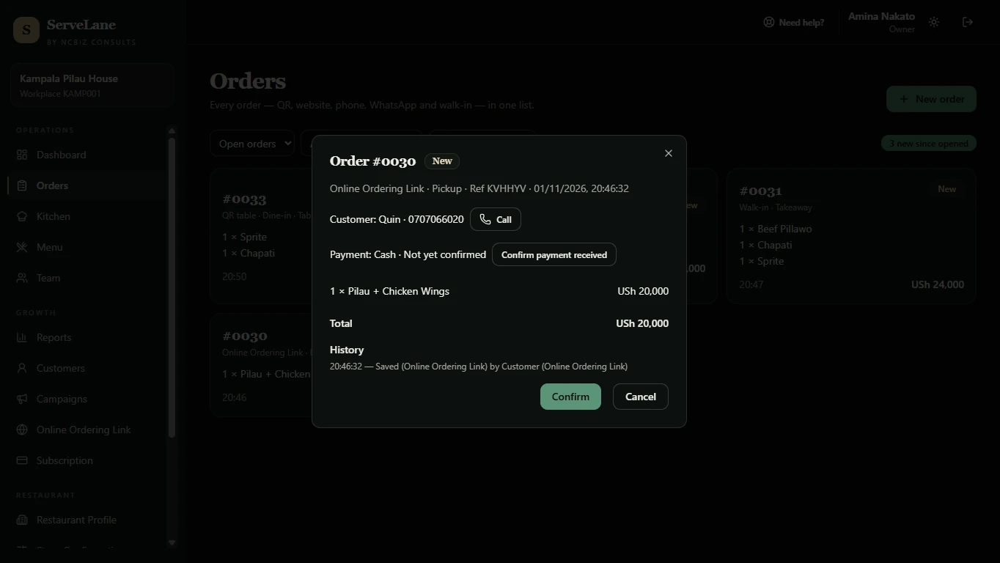
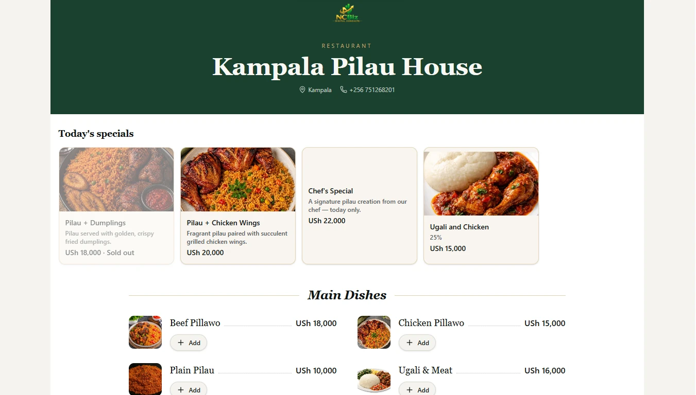
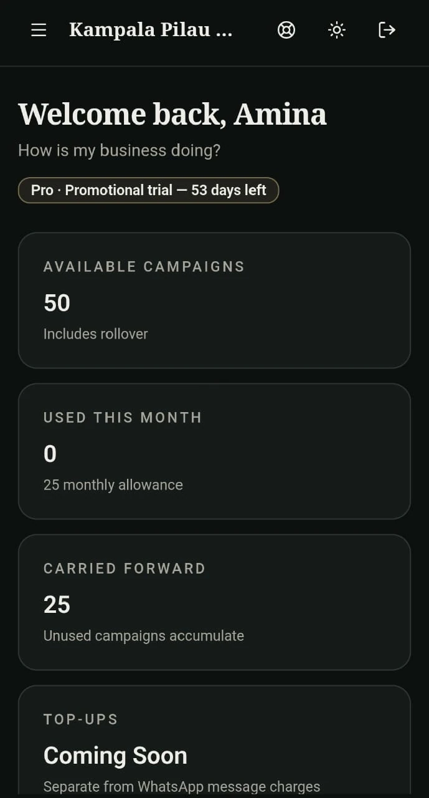
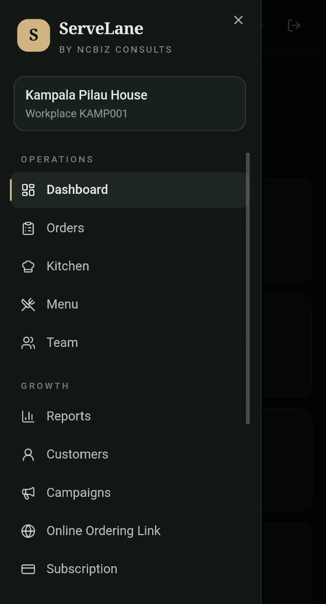

ServeLane helps restaurants manage orders, menus, staff and day-to-day operations from one connected workspace. From receiving customer orders to coordinating restaurant activities, it gives your team a clearer view of what is happening across the business.
When orders, menus, staff communication, customer records and reporting are handled through separate, disconnected processes, it becomes harder to see what is happening across a restaurant. An order may be taken in one place, updated in another and only partly recorded afterwards. Menu changes may not reach everyone who needs them. Reporting then depends on piecing information together after the fact.
ServeLane brings these activities into a more organised workspace, so that orders, menu details, team access, customer records and reports sit together and can be reviewed in one place.
ServeLane does not automatically prevent theft, fraud or misconduct. What it offers is clearer records, better visibility, stronger accountability and easier coordination between the people running the restaurant.
The screenshots on this page come from a demonstration restaurant workspace (Kampala Pilau House) and show sample data. Select any screenshot to view it full size.
The dashboard gives restaurant users an overview of their workspace and operational information as soon as they sign in.

Orders are recorded and managed in one list, so staff can see what has come in and how far each order has progressed.

Reporting helps restaurant users review the operational information recorded in ServeLane over a chosen period.

The menu is managed by the restaurant team, from categories and items through to prices and availability.

WhatsApp API integration, payment gateway integration and automated subscription payments are not yet active. Campaign drafts and scheduling workflows are available, but WhatsApp campaign sending is not active. The existing product can be tested now.
Staff can enter orders manually, open an order to see its details and follow its status as it moves through the restaurant. The workspace also includes a Kitchen area alongside Orders, Menu and Team, so the people preparing food and the people taking orders work from the same set of records.
Opening an order shows its source and type, the customer’s details, how payment is being handled, the items and total, and a history of what has happened to it.

Restaurants can share their online ordering link with customers through their digital channels. Customers can view the restaurant’s online menu and submit orders, and restaurant staff manage the incoming orders inside ServeLane.
The screen below is what customers see. It is separate from the restaurant’s internal management workspace shown elsewhere on this page.

Restaurant users can access the platform through supported mobile screens. The dashboard adapts to a phone, and the navigation opens as a menu with the same sections: Dashboard, Orders, Kitchen, Menu, Team, Reports, Customers, Campaigns, Online Ordering Link and Subscription.


Coordinate orders, menus and team activity from one workspace.
Keep a clear record of orders and menu availability through the day.
Record pickup and takeaway orders and follow them through to ready.
Manage a steady flow of orders with clear statuses.
Give counter and kitchen staff a shared view of current orders.
Handle dine-in and online orders alongside menu and customer records.
Authorised team members can access the workspace according to their assigned responsibilities. Supported team roles include:
Take a closer look at ServeLane and see how its restaurant operations tools work together, from the restaurant workspace to everyday order management.
Focuses on the customer-facing digital experience. It can help a restaurant establish a website or digital menu, provide QR-based access and support customer ordering through available channels, including WhatsApp Business handoff.
Focuses on the restaurant’s internal operational workspace, including order management, menus, staff, kitchen workflows, customer records and reporting.
The two solutions can complement one another, but the Restaurant Digital Launch Kit can operate independently. It does not depend on ServeLane.
ServeLane is open for testing. Explore the platform, set up your restaurant workspace and see how its available tools can support your day-to-day restaurant operations.